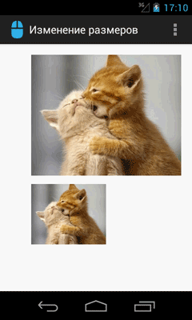
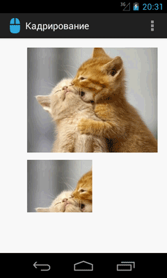
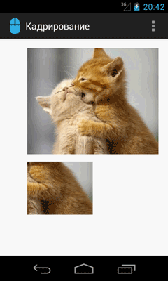
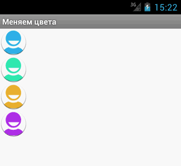

/* Моя кошка замечательно разбирается в программировании. Стоит мне объяснить проблему ей - и все становится ясно. */
John Robbins, Debugging Applications, Microsoft Press, 2000

/* Моя кошка замечательно разбирается в программировании. Стоит мне объяснить проблему ей - и все становится ясно. */
John Robbins, Debugging Applications, Microsoft Press, 2000
Изменение размеров - метод createScaledBitmap()
Кадрирование - метод createBitmap()
Меняем цвета каждого пикселя
Конвертируем Bitmap в байтовый массив и обратно
Как раскодировать Bitmap из Base64
Вам часто придётся иметь дело с изображениями котов, которые хранятся в файлах JPG, PNG, GIF. По сути, любое изображение, которое мы загружаем из графического файла, является набором цветных точек (пикселей). А информацию о каждой точке можно сохранить в битах. Отсюда и название - карта битов или по-буржуйски - bitmap. У нас иногда используется термин растр или растровое изображение. В Android есть специальный класс android.graphics.Bitmap для работы с подобными картинками.
Когда вы размещали в разметке активности компонент ImageView и присваивали атрибуту android:src ресурс из папок drawable-xxx, то система автоматически выводила изображение на экран.
Если нужно программно получить доступ к битовой карте (изображению) из ресурса, то используется такой код:
// Конвертируем Drawable в Bitmap
Bitmap mBitmap = BitmapFactory.decodeResource(getResources(), R.drawable.catpic);
int mPhotoWidth = mBitmap.getWidth();
int mPhotoHeight = mBitmap.getHeight();
// присваиваем ImageView
imageView.setImageBitmap(mBitmap);
Обратный процес конвертации из Bitmap в Drawable:
Drawable drawable = new BitmapDrawable(mBitmap);
Изображение можно сохранить, например, на SD-карту в виде файла (кусок кода):
try {
FileOutputStream fos = new FileOutputStream(dirname + "cat.jpg");
mBitmap.compress(CompressFormat.JPEG, 75, fos);
fos.flush();
fos.close();
} catch (Exception e) {
Log.e("MyLog", e.toString());
}
Каждая точка изображения преставлена в виде 4-байтного целого числа. Сначала идёт байт прозрачности - значение 0 соответствует полной прозрачности, а 255 говорит о полной непрозрачности. Промежуточные значения позволяют делать полупрозрачные изображения. Этим искусством в совершенстве владел чеширский кот, который умело управлял всеми точками своего тела и расстворялся в пространстве, только улыбка кота долго ещё висела в воздухе (что-то я отвлёкся).
Следующие три байта отвечают за красный, зелёный и синий цвет, которые работают по такому же принципу. Т.е. значение 255 соответствует насыщенному красному цвету и т.д.
Так как любое изображение кота - это набор точек, то с помощью метода getPixels() мы можем получить массив этих точек, сделать с этой точкой что-нибудь нехорошее (поменять прозрачность или цвет), а потом с помощью родственного метода setPixels() записать новые данные обратно в изображение. Так можно перекрасить чёрного кота в белого и наоборот. Если вам нужна конкретная точка на изображении, то используйте методы getPixel()/setPixel(). Подобный подход используется во многих графических фильтрах. Учтите, что операция по замене каждой точки в большом изображении занимает много времени. Желательно проводить подобные операции в отдельном потоке.
На этом базовая часть знакомства с битовой картой закончена. Теперь подробнее.
Учитывая ограниченные возможности памяти у мобильных устройств, следует быть осторожным при использовании объекта Bitmap во избежание утечки памяти. Не забывайте освобождать ресурсы при помощи метода recycle(), если вы в них не нуждаетесь. Например:
Bitmap image = ..... (ваш код)
...
if(image != null) {
image.recycle();
image = null;
}
С помощью метода createScaledBitmap() можно изменить размер изображения.
Будем тренироваться на кошках. Добавим картинку в ресурсы (res/drawable). В разметку добавим два элемента ImageView
ImageView image1 = (ImageView) findViewById(R.id.imageView1);
ImageView image2 = (ImageView) findViewById(R.id.imageView2);
// Конвертируем Drawable в Bitmap и выводим в ImageView
Bitmap bmOriginal = BitmapFactory.decodeResource(getResources(),
R.drawable.catlove);
image1.setImageBitmap(bmOriginal);
// Вычисляем ширину и высоту изображения
int width = bmOriginal.getWidth();
int height = bmOriginal.getHeight();
// Половинки
int halfWidth = width / 2;
int halfHeight = height / 2;
// Выводим уменьшенную в два раза картинку во втором ImageView
Bitmap bmHalf = Bitmap.createScaledBitmap(bmOriginal, halfWidth,
halfHeight, false);
image2.setImageBitmap(bmHalf);

В последнем параметре у метода идёт булева переменная, отвечающая за сглаживание пикселей. Обычно его применяют, когда маленькое изображение увеличивают в размерах, чтобы улучшить качество картинки. При уменьшении, как правило, в этом нет такой необходимости.
Существует несколько перегруженных версий метода Bitmap.createBitmap(), с помощью которых можно скопировать участок изображения.
Описываемый ниже код не являяется оптимальным и очень ресурсоёмкий. На больших изображениях код будет сильно тормозить. Приводится для ознакомления. Чтобы вывести часть картинки, можно сначала создать нужный Bitmap с заданными размерами, занести в массив каждый пиксель исходного изображения, а затем этот же массив вернуть обратно. Но, так как мы уже задали другие размеры, то часть пикселей не выведутся.
ImageView image1 = (ImageView) findViewById(R.id.imageView1);
ImageView image2 = (ImageView) findViewById(R.id.imageView2);
// Конвертируем Drawable в Bitmap и выводим в ImageView
Bitmap bmOriginal = BitmapFactory.decodeResource(getResources(),
R.drawable.catlove);
image1.setImageBitmap(bmOriginal);
// Вычисляем ширину и высоту изображения
int width = bmOriginal.getWidth();
int height = bmOriginal.getHeight();
// Половинки
int halfWidth = width / 2;
int halfHeight = height / 2;
// Выводим верхнюю левую четвертинку картинки
Bitmap bmUpRightPartial = Bitmap.createBitmap(halfWidth, halfHeight,
Bitmap.Config.ARGB_8888);
int[] pixels = new int[halfWidth * halfHeight];
bmOriginal
.getPixels(pixels, 0, halfWidth, 0, 0, halfWidth, halfHeight);
bmUpRightPartial
.setPixels(pixels, 0, halfWidth, 0, 0, halfWidth, halfHeight);
image2.setImageBitmap(bmUpRightPartial);
По аналогии мы можем вывести и нижнюю правую часть изображения:
// Выводим нижнюю правую четвертинку
Bitmap bmDownRightPartial = Bitmap.createBitmap(halfWidth, halfHeight,
Bitmap.Config.ARGB_8888);
int[] pixels5 = new int[halfWidth * halfHeight];
bmOriginal.getPixels(pixels5, 0, halfWidth, halfWidth, halfHeight,
halfWidth, halfHeight);
bmDownRightPartial
.setPixels(pixels5, 0, halfWidth, 0, 0, halfWidth, halfHeight);
image2.setImageBitmap(bmDownRightPartial);
 
Немного модифицировав код, мы можем кадрировать центр исходного изображения. Предварительно придётся проделать несколько несложных вычислений.
// Центр 1/4
Bitmap bmCenterPartial = Bitmap.createBitmap(halfWidth, halfHeight,
Bitmap.Config.ARGB_8888);
int[] pixels = new int[halfWidth * halfHeight];
bmOriginal.getPixels(pixels, 0, halfWidth, halfWidth / 2,
halfHeight / 2, halfWidth, halfHeight);
bmCenterPartial
.setPixels(pixels, 0, halfWidth, 0, 0, halfWidth, halfHeight);
image2.setImageBitmap(bmCenterPartial);
Скриншот приводить не буду, проверьте самостоятельно.
Через метод getPixels() мы можем получить массив всех пикселей растра, а затем в цикле заменить определённым образом цвета в пикселе и получить перекрашенную картинку. Для примера возьмем стандартный значок приложения, поместим его в ImageView, извлечём информацию из значка при помощи метода decodeResource(), применим собственные методы замены цвета и полученный результат поместим в другие ImageView:
<?xml version="1.0" encoding="utf-8"?>
<LinearLayout xmlns:android="http://schemas.android.com/apk/res/android"
android:layout_width="fill_parent"
android:layout_height="fill_parent"
android:orientation="vertical" >
<ImageView
android:id="@+id/image1"
android:layout_width="wrap_content"
android:layout_height="wrap_content" />
<ImageView
android:id="@+id/image2"
android:layout_width="wrap_content"
android:layout_height="wrap_content" />
<ImageView
android:id="@+id/image3"
android:layout_width="wrap_content"
android:layout_height="wrap_content" />
<ImageView
android:id="@+id/image4"
android:layout_width="wrap_content"
android:layout_height="wrap_content" />
</LinearLayout>
Код для класса активности:
@Override
public void onCreate(Bundle savedInstanceState) {
super.onCreate(savedInstanceState);
setContentView(R.layout.activity_test);
ImageView image1 = (ImageView)findViewById(R.id.image1);
ImageView image2 = (ImageView)findViewById(R.id.image2);
ImageView image3 = (ImageView)findViewById(R.id.image3);
ImageView image4 = (ImageView)findViewById(R.id.image4);
Bitmap bmOriginal = BitmapFactory.decodeResource(getResources(), R.drawable.ic_launcher);
image1.setImageBitmap(bmOriginal);
int width = bmOriginal.getWidth();
int height = bmOriginal.getHeight();
Bitmap bmDublicated2 = Bitmap.createBitmap(width, height, Bitmap.Config.ARGB_8888);
Bitmap bmDublicated3 = Bitmap.createBitmap(width, height, Bitmap.Config.ARGB_8888);
Bitmap bmDublicated4 = Bitmap.createBitmap(width, height, Bitmap.Config.ARGB_8888);
int[] srcPixels = new int[width * height];
bmOriginal.getPixels(srcPixels, 0, width, 0, 0, width, height);
int[] destPixels = new int[width * height];
swapGB(srcPixels, destPixels);
bmDublicated2.setPixels(destPixels, 0, width, 0, 0, width, height);
image2.setImageBitmap(bmDublicated2);
swapRB(srcPixels, destPixels);
bmDublicated3.setPixels(destPixels, 0, width, 0, 0, width, height);
image3.setImageBitmap(bmDublicated3);
swapRG(srcPixels, destPixels);
bmDublicated4.setPixels(destPixels, 0, width, 0, 0, width, height);
image4.setImageBitmap(bmDublicated4);
}
void swapGB(int[] src, int[] dest) {
for (int i = 0; i < src.length; i++) {
dest[i] = (src[i] & 0xffff0000) | ((src[i] & 0x000000ff) << 8)
| ((src[i] & 0x0000ff00) >> 8);
}
}
void swapRB(int[] src, int[] dest) {
for (int i = 0; i < src.length; i++) {
dest[i] = (src[i] & 0xff00ff00) | ((src[i] & 0x000000ff) << 16)
| ((src[i] & 0x00ff0000) >> 16);
}
}
void swapRG(int[] src, int[] dest) {
for (int i = 0; i < src.length; i++) {
dest[i] = (src[i] & 0xff0000ff) | ((src[i] & 0x0000ff00) << 8)
| ((src[i] & 0x00ff0000) >> 8);
}
}
На скриншоте представлен оригинальный значок и три варианта замены цветов.

Ещё один пример, где также в цикле меняем цвет каждого пикселя Green->Blue, Red->Green, Blue->Red (добавьте на экран два ImageView):
public class BitmapProcessingActivity extends Activity {
ImageView imageView_Source, imageView_Dest;
Bitmap bitmap_Source, bitmap_Dest;
/** Called when the activity is first created. */
@Override
public void onCreate(Bundle savedInstanceState) {
super.onCreate(savedInstanceState);
setContentView(R.layout.main);
imageView_Source = (ImageView)findViewById(R.id.source);
imageView_Dest = (ImageView)findViewById(R.id.dest);
bitmap_Source = BitmapFactory.decodeResource(getResources(), R.drawable.ic_launcher);
imageView_Dest.setImageBitmap(processingBitmap(bitmap_Source));
}
private Bitmap processingBitmap(Bitmap src){
Bitmap dest = Bitmap.createBitmap(
src.getWidth(), src.getHeight(), src.getConfig());
for(int x = 0; x < src.getWidth(); x++){
for(int y = 0; y < src.getHeight(); y++){
// получим каждый пиксель
int pixelColor = src.getPixel(x, y);
// получим информацию о прозрачности
int pixelAlpha = Color.alpha(pixelColor);
// получим цвет каждого пикселя
int pixelRed = Color.red(pixelColor);
int pixelGreen = Color.green(pixelColor);
int pixelBlue = Color.blue(pixelColor);
// перемешаем цвета
int newPixel= Color.argb(
pixelAlpha, pixelBlue, pixelRed, pixelGreen);
// полученный результат вернём в Bitmap
dest.setPixel(x, y, newPixel);
}
}
return dest;
}
}
public byte[] getByteArrayfromBitmap(Bitmap bitmap) {
ByteArrayOutputStream bos = new ByteArrayOutputStream();
bitmap.compress(CompressFormat.PNG, 0, bos);
return bos.toByteArray();
}
public Bitmap getBitmapfromByteArray(byte[] bitmap) {
return BitmapFactory.decodeByteArray(bitmap , 0, bitmap.length);
}
Если изображение передаётся в текстовом виде через Base64-строку, то воспользуйтесь методом, позволяющим получить картинку из этой строки:
public static Bitmap convertBase64StringToBitmap(String source) {
byte[] rawBitmap = Base64.decode(source.getBytes(), Base64.DEFAULT);
Bitmap bitmap = BitmapFactory.decodeByteArray(rawBitmap, 0, rawBitmap.length);
return bitmap;
}